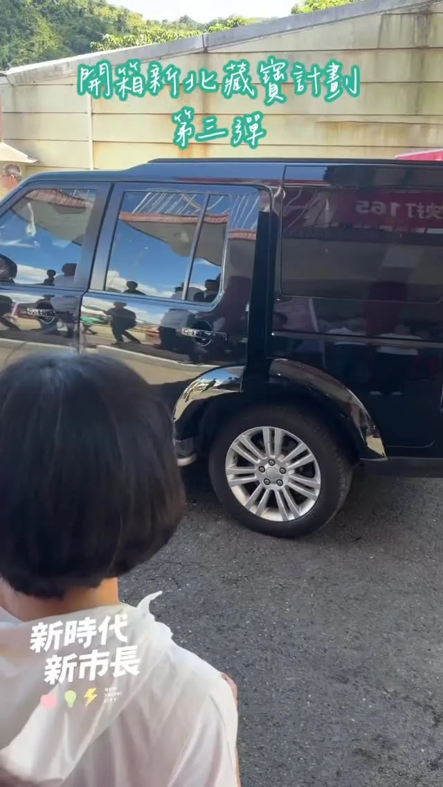
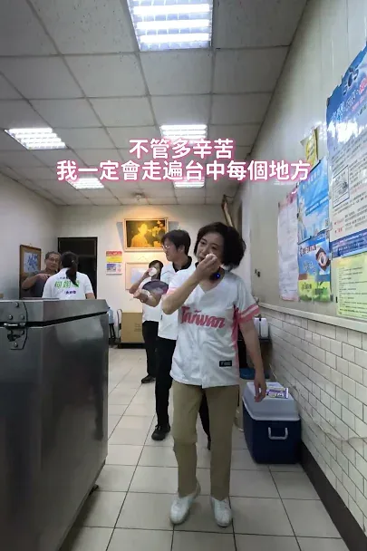
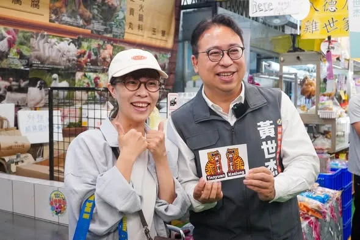
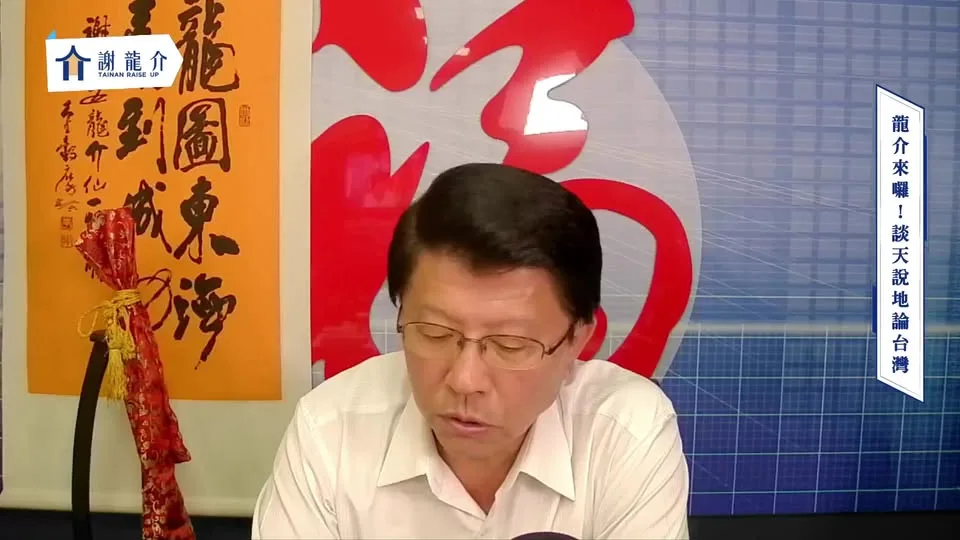
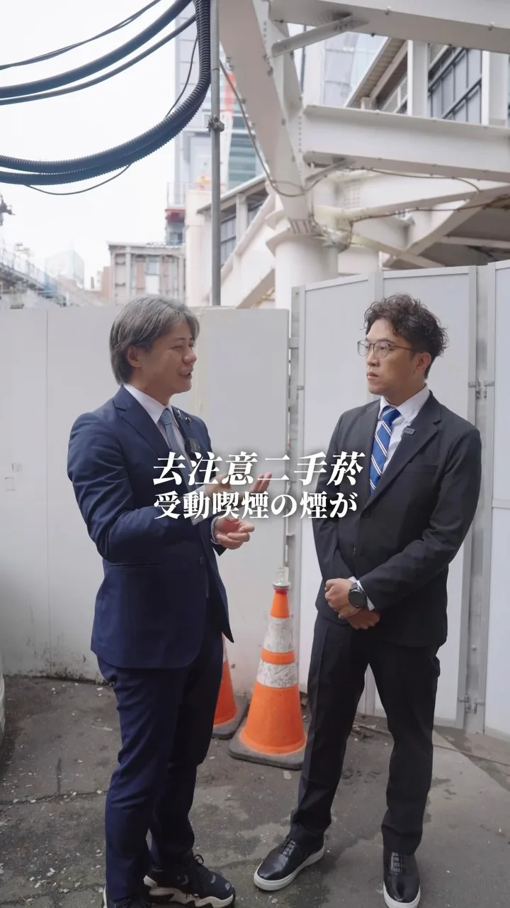
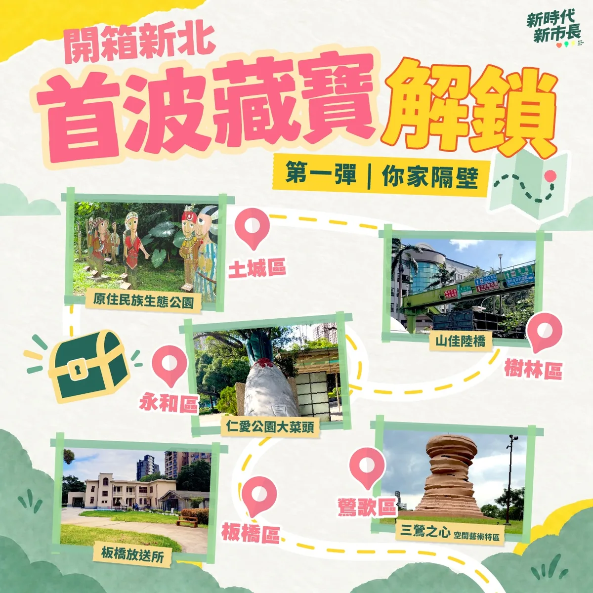

沈伯洋pumashen
@pumashen:今天再度來到北投市場 有位弟弟找我PK陀螺 謝謝弟弟 我好久沒打陀螺了ಥ_ಥ
Posts
@pumashen:今天再度來到北投市場 有位弟弟找我PK陀螺 謝謝弟弟 我好久沒打陀螺了ಥ_ಥ

@chen_tingfei:報告！今天輪到軍人妃妃泰迪熊報到🫡🐻 這身裝備是不是很帥氣呢！ 妃妃熊持續解鎖中🔓 明天會是哪一隻呢？👀


@su.chiaohui:開箱新北第三彈——鑽石山城！ 大家都知道新北有得天獨厚的山海美景，而我今天再次請到重量級來賓宣傳我們這次的主題「鑽石山城」，這位VIP就是樂樂⋯⋯的主人—— @tsai_ingwen 小英總統！ 這一次的尋寶紀念品是與漫畫家季雅 @kiyascomic以及插畫家Asta Wu @asta_astawu合作！ 季雅的作品《異人茶跡》帶我們透過茶葉的歷史故事，看見百年以前臺灣茶走向世界的過程；而Asta Wu 除了有和山林製造以及林業署合作的插畫設計，也有自己的「臺灣特色茶」系列插畫。這裡面，都與我們新北山城的製茶文化息息相關，非常推薦大家除了參與這次的藏寶計劃，也看看兩位創作者的精彩作品！ 希望大家一起透過尋寶，更認識新北閃亮亮的「鑽石山城」！
@chen_tingfei:今天登場的是科技妃妃泰迪熊！🤖✨ 它手上的東西大家認得出來嗎？👀

來到市場，除了看看新鮮蔬果，更期待的是和大家握握手、聊聊天，聽聽生活裡的大小事❤️ 我會繼續走進大台中的每一個市場，下一站，說不定就遇見你！

What Is Japan’s Experience with Setting Up Smoking Rooms? How Does Japan Consider Different Needs?

忠孝路夜市巧遇老字號青草茶！阿純一喝繼續活力滿滿🌿

亭妃來到官田，見證隆田里活動中心新建工程動土！ 一磚一瓦，都是鄉親對未來生活的期待。未來完工後，將提供更完善的活動與交流空間，讓社區更有活力、居民生活更便利。 #陳亭妃 #台南400第一女市長 #官田 #隆田里活動中心 #一棒接一棒
我要推動 #20分鐘生活圈，讓市民能把更多時間留給家人，從生活機能、交通、產業到城市治理，重新盤點臺中的生活需求。 ✨補足生活機能 盤點綠地公園與食衣住行育樂需求缺口，讓市民在20分鐘生活圈內，就近滿足各種日常需求。 ✨改革公車路網 拚藍線完工、捷運多線齊發；捷運路網成形前推動公車免費，並建立五大生活圈轉運中心，加密班次，串聯住宅區、醫院、商圈與青年基地。 ✨打造五大生活圈品牌 發展山城、海線、屯區、市區、高鐵門戶特色，結合智慧農業、海洋科技、精密機械、會展文化、智慧物流等產業，增加青年留下發展的機會。 ✨導入AI智慧治理 結合 AI 與 GIS，建立「大臺中生活圈幸福指標」，用大數據檢視交通、公共服務及食衣住行就業需求。 讓每個生活圈都有完整機能，打造更便利、更宜居的臺中！ #臺中啟程 #打造旗艦城

今天從中壢華勛市場到八德公有市場，走進大家每天採買、吃早餐、話家常的地方，也聽見許多最貼近生活的聲音！ 一早來到華勛市場，沿路和攤商、買菜的鄉親打招呼，收到好多特別的祝福。有人送來鳳梨、粽子、蒜頭，還有可愛的蒜頭吊飾，甚至有支持者特別帶著「杰伴童行」貼紙來合照，大家的熱情讓一早的掃街行程活力滿滿🫶🏻 接著來到八德公有市場，感受市場與周邊居民緊密相連的生活日常。收到鄉親送來蘿蔔和竹筍祝福，結束後我們到在地超過30年的「50巷麵店」，邊吃麵邊聊地方事，來場最在地的早餐聚會。遇到很多市民朋友，大家都是巷仔內的！ 中壢、八德快速發展，人口持續移入，交通問題是居民的日常，捷運建設要如期如質、資訊公開透明，未來我也要把周邊道路、大眾運輸路網規劃好，讓建設真正接上市民每天的生活。大家關心的垃圾費隨袋徵收，在取得充分共識前，我也承諾停止推動。 感謝中壢中壢大姊姊張曉昀議員、魏筠議員、彭俊豪議員、黃崇真 Huang Chung-Chen議員，八德許家睿 Hsu Chia-Jui議員、市議員呂林小鳳議員、蔡永芳 • 阿芳議員候選人服務團隊、福興里姚成達里長、瑞豐里呂學琪里長，以及八德公有零售市場自治會邱秋珍會長一起同行。 心中壢、心八德，杰伴動起來💖


讓街道更好走，讓散步成為中壢的日常 一座城市的進步，不只有捷運、道路這些大型建設，也包括每天出門走路時，一些很實際的感受。 過去的中壢復興路，更多是提供車輛通行；現在，我們把更多空間留給行人、自行車，也增加綠樹和休憩空間； 除了拓寬人行空間，也拆除占用道路的違建及電箱等設施，讓人行動線更完整。此外，也新設實體車阻，增加行走時的安全防護；同時整理架空纜線等雜亂設施，讓街道的視覺更乾淨、更舒服。 從人行空間、路口設計，到街道景觀，我們把一項一項的細節做好，讓復興路成為一條可以慢慢散步的街道。 當然，一條復興路改造完成，還遠遠不夠。 目前，中壢中正公園周邊的改造還進行，預計明年3月完工，完工後將能串聯中壢火車站、中壢圖書館、仁海宮等節點，讓中壢市區的生活空間更完整、更便利。 不只是中壢，我們也已經啟動龍潭舊城、富岡老街的人本環境改善計畫，逐步補足舊市區較缺乏的行人空間與公共環境，把市民每天要走的街道建設好，讓人願意走、願意停留，也讓沿街商業有更好的發展空間。


20260918 談天說地論臺灣｜龍介的直播
成德市場，是許多南港人的日常，也是鄰近忠孝院區醫護人員、病患家屬採買的重要去處。 ⠀ 和成德市場和攤商與鄉親問候，聽聽大家對市場未來的期待；也謝謝自治會杜樁松會長熱情接待。 ⠀ 從早年的臨時攤販，到市場整建、攤商搬遷，成德市場陪伴地方走過數十年。未來如要改建，除了讓市場更安全、乾淨、舒適，也一定要傾聽攤商與住戶的聲音，讓改建真正符合地方需要。 ⠀ 謝謝每一位熱情打氣的朋友，市場的人情味，就是台北最珍貴的城市風景！ ⠀ ＃台北順起來 ＃你的市長沈伯洋
祈福納祥．同心守護臺中平安 今天回到 #玉敕封神台谷關大道院，參加「八八蟠桃聖會暨祈安錫福大法會」，與鄉親們共同為神明祝壽，祈願 #臺中平安、#臺灣平安。 宗教信仰是臺灣社會最溫柔、也最堅定的力量，不僅安定人心，更凝聚守望相助的善念。一座有韌性的城市，需要人與人之間的信任、團結與關懷，大家彼此牽成、相互照顧，就是守護家園最堅實的力量。 感謝谷關大道院長期傳承道教文化、凝聚地方善念，以及所有工作人員與善信大德的付出。祈求神明庇佑國泰民安、風調雨順，祝福大家身體康健、闔家平安，中秋佳節愉快！ #臺中啟程 #打造旗艦城 #韌性城市
@pumashen:設置吸菸室，日本的經驗是什麼？ 日本還考慮不同需求？

設置吸菸室，日本的經驗是什麼？日本還考慮不同需求？

前鎮漁港應該是台灣在遠洋漁業上，跟世界連結最值得發出的名片。 今天，我與行政院 張惇涵 Chang Tun-Han 秘書長、農業部 ＃陳駿季 部長 會勘前鎮漁港，並與 陳其邁 Chen Chi-Mai 市長討論後續營運規劃，正式拍板啟動兩年試營運，從運銷中心到船員會館，逐項改善、加速啟用。 ⚓️ 落實漁工人權，打造安心歇息的環境 為了照顧國際漁工，我們爭取到船員會館每晚200元住宿費，努力朝100元繼續爭取，未來由政府出700元與船東共同負擔；漁工免負擔，同時全面提升居住品質與安全，讓每一位為台灣漁業努力的船員都能好好休息。 🐟接軌國際標準，加速運銷中心大升級 未來，試營運期間將由中央全額補助，攤商免費進駐，一起提升服務品質。同時，新的運銷中心，將符合HACCP的食安衛生標準，以及出口歐盟的條件，這是為了提升市場的競爭力，也確保消費者吃的安心。 前鎮漁港不但是全國最大的遠洋漁業基地，更是關乎上千億元產值、外籍船員權益與台灣國際形象的指標。照顧好每一位倚海而生的人，是我對港都最堅定的承諾。 我知道，改變習慣的過程需要一點時間磨合，協助大家順利度過這段過程，未來在嶄新的現代化漁港好做生意、安心休息，也讓更多人走進前鎮漁港，讓全世界都看見高雄漁業的魅力！

【#開箱新北 第一彈：你家隔壁】解答公布！ 很開心看到大家熱烈參與開箱新北的藏寶計劃！這次我們帶大家走進新北各個角落，也期待透過一個個藏寶點的故事，讓大家認識新北不同地方的特色。 現在就讓我們一起認識第一波藏寶點背後的故事，以及這次合作的創作者，也歡迎跟我分享你答對幾個喔！ 開箱新北第一彈——土城原住民族生態公園 大家知道土城有座原住民族生態公園嗎？ 這座公園的前身是海山煤礦，曾經是台灣的第二大礦區。 當時礦主到花東招募礦工，使海山煤礦有六成都是阿美族人。1984年發生了海山礦災。 74名罹難者裡，大多都是阿美族礦工。 災變導致了海山煤礦最後也在1989年歇業，部分倖存的族人遷往現在的三鶯部落或南靖部落居住。這也是為什麼土樹三鶯現今是新北都市原住民人數最多的區域之一。 現在，土城原住民族生態公園是周遭都市原住民進行歲時祭儀的場地，同時也保留了海山煤礦礦災的說明，這塊土地承載了過去和現在的故事...。 開箱新北第一彈——樹林山佳陸橋 大家知不知道新北市的樹林，一個區就有樹林、南樹林、山佳三座火車站！ 其中的山佳火車站還保有1931年改建的舊站站房，建築反映了當時日本流行的和、洋、德式建築工法，非常特別。 而南樹林車站雖然是小站，但像是樹屋的車站建築非常美麗。在夜晚看起來是一座迷人的玻璃屋！南樹林車站緊鄰作為東部幹線發車點的樹林調車廠，所有沿著太平洋奔跑的火車，最後都要回到這裡整理、休息。 因此南樹林雖然是迷你小站，但站在月台上，卻可以就近看到各式各樣的火車：自強號、普悠瑪、太魯閣、區間車全部輪番上陣！ 另外啊！在這兩個車站之間還隱藏了一個讓火車迷激動的秘密景點：樹林中山路與東佳路的交叉口，有一座跨越樹林調車廠的綠色人行路橋。 陸橋下就是調車廠的廠房！站在陸橋上可以清楚的看見火車「張開嘴巴」維修、也可以看到辛苦的清潔人員仔細的整理內部的環境。對於喜愛火車的小朋友，這絕對是一處讓人流連忘返的地方！ 開箱新北第一彈——永和仁愛公園菜頭 不知道大家有沒有發現我們永和的仁愛公園出口有一個大菜頭？大菜頭旁邊有個解說碑文，上面寫著：「『溪州菜頭』在五〇年代為永和之特產」，而溪州其實就是永和的舊名。 這裡最原本住著平埔族龜崙蘭社、秀朗社，「龜崙蘭」有沙洲之意，因此，泛稱此地為溪洲。 因為由新店溪沖積成的沙壤土很適合蘿蔔生長，加上水利灌溉發達，全盛時期整個永和遍地都是大菜頭！過年的時候，永和的路上都是拉蘿蔔的板車，當時還普遍保有家戶自己做蘿蔔糕的習慣，家家戶戶就地取材，堆石作灶，製作簡單的蒸籠，整條街上都是香噴噴的蘿蔔糕香。 下次到仁愛公園走走，不要忘了來朝聖一下當年的永和特產「溪州菜頭」！ 開箱新北第一彈——板橋放送所 板橋放送所隱身在熱鬧的市區之中，路過可能只覺得它是一塊散落著老建築的綠地。 但其實，這裡曾經是台灣重要的「聲音放送基地」。放送所在日文裡是「廣播電臺」的意思。板橋放送所是日治時期全台負責廣播訊號傳送的地點之一。據耆老口述，會選擇此處設立，是因為位於板橋平原隆起處，對傳送音波比較有利。在那個沒有網路、電話也不普及的年代，廣播幾乎是人們接觸外界的唯一窗口。 這座歷經戰爭、戒嚴，也見證經濟起飛，再到電視時代的放送所，曾面臨被拆除的命運，幸好在文史團體的爭取下，改列為市定古蹟。 現在的放送所轉型成為文創場所，有表演團體進駐、舉辦藝術節等活動，水獺媽媽也曾跟小夥伴一起在這邊說故事！ 開箱新北第一彈——三鶯之心空間藝術特區 三鶯線通車營運後，你想去哪些地方玩？ 位於三鶯線上，鶯歌車站外的三鶯之心空間藝術特區，草地上坐落著數件陶瓷地景藝術裝置。其中，15公尺高的巨型手拉坏，更象徵著鶯歌製陶工藝的源起與輝煌。 緊鄰的新北美術館於2025年開館後，更讓鶯歌這座工藝之都，在傳統陶瓷與當代藝術間激盪出新的火花。園區不時有音樂展演、藝文市集，也很適合野餐、散步，還能沿著周邊自行車道遊訪陶瓷博物館與鶯歌老街。 這週末就搭乘三鶯線，帶著家人或約上三五好友，一起來這裡走走吧！ @hom_comicart #HOM 漫畫創作者，著有《大城小事》、《無價之畫—巴黎的追光少年》等，數次榮獲金漫獎。現於LINE WEBTOON每周日連載《課金派戀愛》。 @jeoyu #小心臟 插畫家，用創作表達情感，小心臟粉紅圓潤的身形裝滿豐富的情緒，用可愛陪伴大家的每一天。
【什麼事都不想做的時候，要怎麼讓心情重新好起來呢？】 適讀年齡：3-6歲，有附注音 ✏️ 本集台語小教室 使性地、公園、泅水、電影、看電影 《波波今天鬧彆扭》 文圖／ 娜塔莉亞．莎洛什維利譯／艾可 波波今天對什麼都有意見。他不想去公園玩、不想去游泳、也不想去看電影。波波到底怎麼了？他該怎麼擺脫鬧彆扭的情緒呢？ ＊故事由水滴文化授權使用＊ 👇 繪本這裡看：https://www.books.com.tw/products/0011037668 👇 更多親子大小事，請在 FB 搜尋： 水獺媽媽巧慧與他的好朋友 https://www.facebook.com/ottermamachiao 👇 寫信給水獺媽媽：100925 立法院郵局 第 27 號信箱 水獺媽媽收
@zenolai:洋流到港，隆捲風來襲！ 我們週六見！ @pumashen

新北樹林鎮前街今天清晨傳來讓人悲痛的消息，一位清潔隊的姊妹在掃街時被酒駕騎士撞上，送醫後離世。我向家屬致上最深的哀悼。 酒駕，我嚴厲譴責。 說實在，清潔隊的兄弟姊妹一直都很辛苦。不管日曬雨淋，城市還沒醒，他們就已經在路上，把新北每個角落顧得乾乾淨淨。 最早出門的人，也該平安回家。 這件事不分黨派，大家都該一起想辦法。除了遏止酒駕，更要讓他們在路上作業時少一點風險。 像窄巷的垃圾清運，可以研擬定點收運，讓隊員少在車流裡穿梭。 這一點，我會跟清潔隊的兄弟姊妹站在一起。他們把新北顧得乾乾淨淨，我們也要把他們顧得平平安安。

20260918 談天說地論臺灣 @longmedia ｜龍介的直播
這個週末，妃妃姐姐和議員有兩場溫暖又有意義的親子活動，歡迎大家一起來參加！ 📅 9/19（六）09:30–16:00 👨👩👧👦 Tainan Pharmacist-陳皇宇 議員親子同樂會 📍歸仁仁壽宮 📅 9/20（日）09:00–12:00 ✂️ 「妃常有欣・柚見中秋」 臺南市議員鄭佳欣 第10屆愛心義剪 💛 十年愛心如初，持續用行動傳遞溫暖 📍關廟山西宮（關廟區正義街37號） 週末作伙來走走、同樂，也一起感受台南滿滿的人情味！ #陳亭妃 #妃常有欣 #柚見中秋 #愛心義剪 #親子同樂
祈福納祥．同心守護臺中平安 今天回到 #玉敕封神台谷關大道院，參加「八八蟠桃聖會暨祈安錫福大法會」，與鄉親們共同為神明祝壽，祈願 #臺中平安、#臺灣平安。 宗教信仰是臺灣社會最溫柔、也最堅定的力量，不僅安定人心，更凝聚守望相助的善念。一座有韌性的城市，需要人與人之間的信任、團結與關懷，大家彼此牽成、相互照顧，就是守護家園最堅實的力量。 感謝谷關大道院長期傳承道教文化、凝聚地方善念，以及所有工作人員與善信大德的付出。祈求神明庇佑國泰民安、風調雨順，祝福大家身體康健、闔家平安，中秋佳節愉快！ #臺中啟程 #打造旗艦城 #韌性城市
設置吸菸室，日本的經驗是什麼？ 日本還考慮不同需求？
@a_chun1973:明天見。

@chen_tingfei:妃妃泰迪熊圖鑑繼續解鎖！🐻 前面已經有三位成員跟大家見面，今天登場的是「魔法妃妃泰迪熊」🪄✨ 接下來每天解鎖一隻！👀
我要推動 #20分鐘生活圈，讓市民能把更多時間留給家人，從生活機能、交通、產業到城市治理，重新盤點臺中的生活需求。 ✨補足生活機能 盤點綠地公園與食衣住行育樂需求缺口，讓市民在20分鐘生活圈內，就近滿足各種日常需求。 ✨改革公車路網 拚藍線完工、捷運多線齊發；捷運路網成形前推動公車免費，並建立五大生活圈轉運中心，加密班次，串聯住宅區、醫院、商圈與青年基地。 ✨打造五大生活圈品牌 發展山城、海線、屯區、市區、高鐵門戶特色，結合智慧農業、海洋科技、精密機械、會展文化、智慧物流等產業，增加青年留下發展的機會。 ✨導入AI智慧治理 結合 AI 與 GIS，建立「大臺中生活圈幸福指標」，用大數據檢視交通、公共服務及食衣住行就業需求。 讓每個生活圈都有完整機能，打造更便利、更宜居的臺中！ #臺中啟程 #打造旗艦城
讓每一位乘客安心到站，從解決駕駛長過勞開始！ ⠀ 跑行程時，常有長輩跟我說，搭公車最怕兩件事：人還沒坐穩，公車就開了；招手慢了一點，公車就過站了。 ⠀ 很多人會覺得，是公車開太趕。但我們更該追問，究竟是什麼原因，讓駕駛長不得不這麼趕？ ⠀ 2025年，台北市區公車發生900件事故，造成529人受傷。至於，百萬公里有責肇事率，也從前一年的2.15件增加到4.02件，接近翻倍。 ⠀ 同一時間，聯營公車駕駛長人數從4,047人減少到3,918人；公車相關陳情則平均每天超過100件。 ⠀ 人力不足、班表太緊，開慢了可能脫班，也壓縮駕駛長原本就不多的休息時間。 ⠀ 長期處在疲勞和趕班的壓力下，不僅乘客不安心，駕駛長也承受著龐大的身心壓力。 ⠀ 為了讓市民安心出門、平安回家，我提出四項台北公車安全改革： ⠀ ▎補貼駕駛長薪資，增加招募誘因 ⠀ 我將啟動精算評估，由市府補貼駕駛長薪資，吸引更多人投入公車駕駛長工作。 ⠀ 也和工時、休息時間等其他勞動條件連動，讓班表更合理、休息真正落實。 同時，檢討現行依里程計算的補貼方式，避免業者為了增加里程，維持過長或重複的路線。 ▎駕駛座導入人因工程，減少行駛資訊干擾 ⠀ 現在的公車駕駛座，裝有盲點偵測、碰撞警示、防夾系統和監視器畫面。 ⠀ 雖然，每一項設備都有安全考量，但全部疊加在一起，也可能分散駕駛長的注意力。 ⠀ 我將評估導入工程，邀集駕駛長、工會及專業團隊，共同檢視設備，整合重複資訊，讓重要提醒更清楚，也容易操作。 ⠀ ▎折返點設置休息站，讓駕駛長有時間喘口氣 ⠀ 不少駕駛長跑完一趟，很快又要返程，連喝水、上廁所或坐下來休息都很困難。 ⠀ 市府應盤點重要折返點、調度站及公有空間，設置駕駛長休息站，提供座椅、飲水及如廁空間。 ⠀ 另外，班表也要保留足夠的休息時間，讓駕駛長跑完一趟，真的能停下來喘口氣，再安全上路。 ⠀ ▎重新整理公車路網，減輕駕駛長趕班壓力 ⠀ 依據各站、各時段的載客資料分析，與業者、市民充分討論，並分階段試辦，滾動調整！ ⠀ 低運量的路段或時段，可評估改用小型巴士或預約式服務。路線調整前，先盤點醫院、長照機構、學校及社福據點，確保不影響市民日常生活。 ⠀ 重建台北公車的安全與信任。我會從改善工作環境做起，讓駕駛長專心開車，把每位乘客平安送到站！ ⠀ #台北順起來 #你的市長沈伯洋
市長，我給你聽好的！